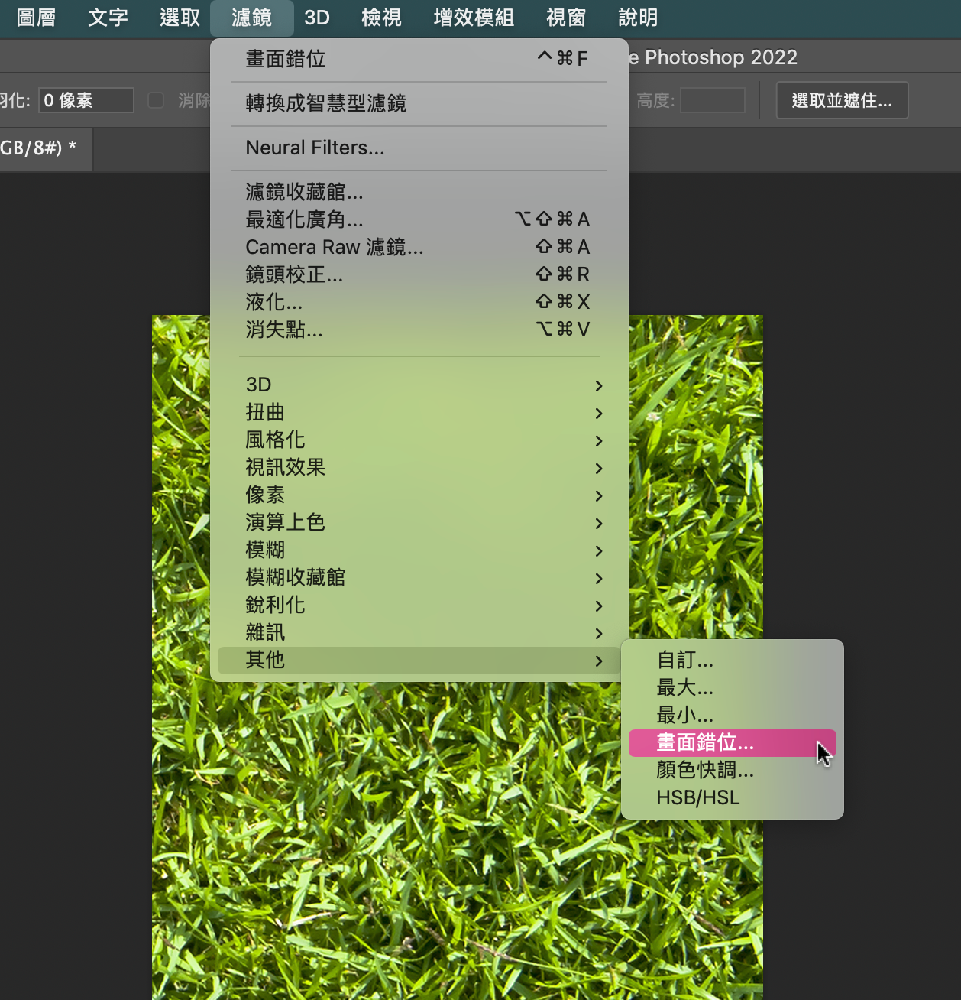
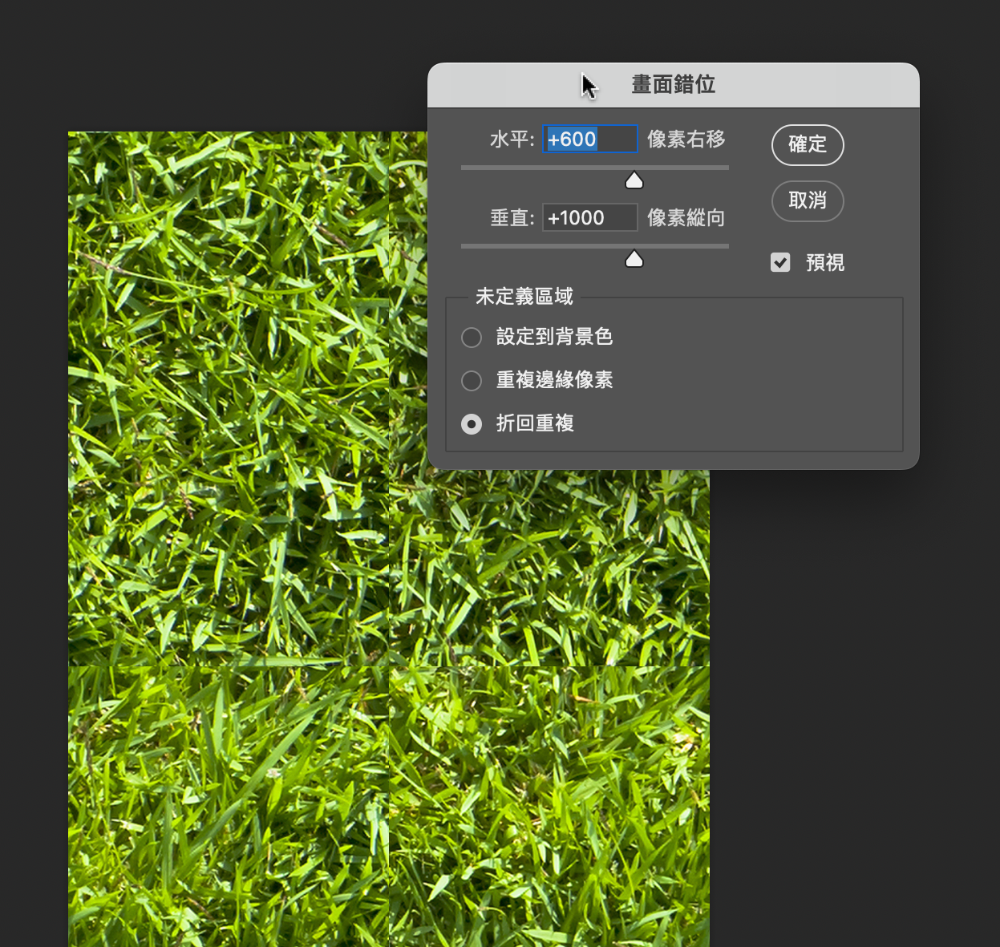

步驟簡要說明
- 使用 Photoshop 開啟圖檔
- 選擇「濾鏡／其他／畫面錯位」 
- 對話框選項：

- 「未定義區域」一定要選「折回重複」。
- 如果背景只要 repeat-y，水平數值輸入 0；如果只要 repeat-ｘ，垂直數值輸入 0。
- 理想的數值大約是圖檔寬或高的一半。
- 用印章 或其他合適的工具，把不連續的邊界修掉。小心四邊不要修改到。
- 如果要保留原背景圖的佈局，可以再執行一次「畫面錯位」功能，數值給為原值的負值。例如本來是 +300 +500 改成 -300 -500
- 背景的位置也可事後用 css 的 background-position 調整